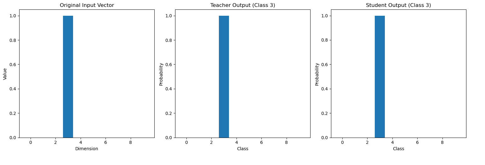

Idea
The core idea is that we can replace the process of end-to-end distillation, where the student takes the same inputs as the teacher and is expected to give the same outputs as the teacher, with distillation of the pipeline, where the student is expected to receive the same intermediate state as a piece of the teacher, and spit out the same intermediate state as the corresponding piece of the teacher. This is called pipeline distillation because we’re distilling individual pieces of the pipeline instead of the whole model.
Pipeline Distillation in Practice
Let’s implement this for a toy problem, simplest thing imagineable : an autoencoder with one-hot encoded classes, 10 ofthem. Then, we implement the pipeline distillation in a following way:
We take a set of initial inputs for the first layer, these are just instances of one-hot encoded classes. We push them through the first layer of the teacher, record hidden states. Then, these hidden states become inputs for the next step of the pipeline, and so on and so forth until we reach the last layer. Our training objective is always MSE. For student, we repeat it: student must receive same inputs, and … we face a problem. Shapes are incompatible, if student is expected to be smaller!
However, this is surprisingly easy to deal with : we just add a temporary reprojection layer, to make them compatible, then just throw it away, and new internal states of size of 128 become inputs for the next stage of the pipeline of the student! Once we know all of this, we can keep training the student, do backpropagation, etc. In the last layer there’s no need for reprojection, because shapes would be compatible, we will have same amount of classes!
Let’s have our teacher to have hidden_dim equal to 512, and studen, 16. Then, shape transformations during training of the same stage of the pipeline are following: [B, 10] -> [B, 512] for teacher, [B,10] -> [B, 16] -> [B,512] for student
Then, [B,10] -> [B,16] become source of the internal states for the student. Keep doing this, until we hit the last layer, in which reprojection is not required.
By the way, it’s irrelevang if we did teach teacher with dropout or not, student still can approximate the teacher. However, if we teach student with dropout, we will fail to distill the model. At least I didn’t manage to get it working for now, maybe later…? And obviously we want student to overfit on hidden state representations, the lower the loss the better student will work. There’s a whole notebook with example implementation here.
Claude made me a nice visualization of the whole proces here:
Teacher Model (512-dim) Student Model (32-dim)
+------------------+ +------------------+
| Input (10d) | | Input (10d) |
+--------|---------+ +--------|---------+
| |
v v
+------------------+ +------------------+
| Encoder1 (512d) | Projection1 | Encoder1 (32d) |
| [captured]----|<--[512d layer]--| [training] |
+--------|---------+ +--------|---------+
| |
v v
+------------------+ +------------------+
| Encoder2 (512d) | Projection2 | Encoder2 (32d) |
| [captured]----|<--[512d layer]--| [training] |
+--------|---------+ +--------|---------+
| |
v v
+------------------+ +------------------+
| Decoder1 (512d) | Projection3 | Decoder1 (32d) |
| [captured]----|<--[512d layer]--| [training] |
+--------|---------+ +--------|---------+
| |
v v
+------------------+ +------------------+
| Decoder2 (10d) | Match | Decoder2 (10d) |
| [captured]----|<--------------- | [training] |
+--------|---------+ +--------|---------+
| |
v v
Final Output Final Output
(teacher) (student)
Legend:
[captured] : Frozen teacher states
[training] : Actively trained student layers
[512d layer]: Temporary upward projection layer
<-----------: Direction of knowledge flow
Key Points:
* Each projection layer temporarily upscales 32d→512d
* Projections are trained alongside student model
* Projections are discarded after training
* Final 10d output doesn't need projectionIn one of the last cells of the notebook there is a good examples of outputs of such autoencoders:

We see that they’re entirely identical, although it is confusing why the hell does this even work when we just kept removing pipeline stages during training (remember, reprojection layer is temporary!)
So, why the hell does this work?
Well, my guess would be “something-something manifold hypothesis something-something”. If solution can actually be approximated in a smaller space, then it can as well be squeezed from bigger state like this.
Why?
Now you don’t need to load the whole model in order to quickly distill something. At least this is the expectation. I need to do more tests of this, on MNIST, CIFAR, and transformers. Bonus points for being able to tell during training of the early stages of the pipeline whether or student size is sufficient. For instance, when I trained my autoencoders, I could go as low as to just 3 for the intermediate state size of the student! And I could tell how low can I go during training of the first two stages! Distilling transformers like this would be especially interesting, as the pipeline is much more complex than whatever we’ve had here, as well as trying to distill them with shortened pipelines.
Not even talking about such possibilities as carving out stuff that we’re interested in, like certain sub-sets of the dictionary, or modified behaviours by introductin SAEs into teacher pipeline during distillation! There’s so much to test, so more is coming.